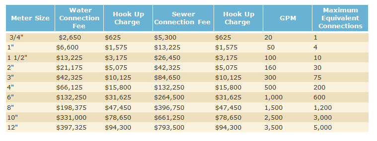

Water and Sewer Billing
Water and Sewer Rates
Water and sewer rates are assessed monthly as follows:
- $23.30 for 1,000 gallons (minimum bill)
- $0.71 per 100 gallons of water or part thereof used.
Water meters are read by Rockingham County Public Works employees; however, water usage is billed through the town of Mt. Crawford. Water bills are due on or before the 1st of each month. Penalty charges for late payment are levied beginning on the 1st of the following month.
Payments may be submitted to
PO Box 187 in Mt. Crawford or dropped in the town's drop box located on Mill Street. Water payments, can also be dropped at Town hall or made in person during open office hours.Turning On Water Service
To turn on water service in a new name for an existing water and sewer connection, please contact the Town Treasurer at townofmountcrawford@gmail.com or (540) 421-0856.
The following form will be required to process your request
Click To Download Form
Please note that the application requires a signature of the property owner. In the case of an account being established for renters, signatures from both tenants and property owner are required.
New Service Connections
Connection Fees
To receive new Town water and/or sewer services, the property owner is responsible to pay the connection fees. Paying the connection fees establishes the property owner's rights to connect onto the town's water and/or sewer system. The town will not install the service line(s) to the property until these fees are paid. The connection fees are assessed based on the rates below. Please note that a typical residential connection requires a 3/4 meter.
Additional Costs
The property owner is also responsible for installing the service lines from the property line, where the town stops the service lines, to the building that will receive the water and/or sewer service. Usually this is performed by an independent contractor, licensed by the state to perform such tasks. The property owner will hire the contractor of their choosing and make the arrangements to pay their fees.
Application
To begin the process of receiving new Town water and/or sewer services, please email townofmountcrawford@gmail.com
Further Questions
If you have questions or concerns regarding Mt. Crawford Water and Sewer, please email townofmountcrawford@gmail.com